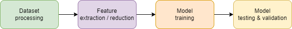
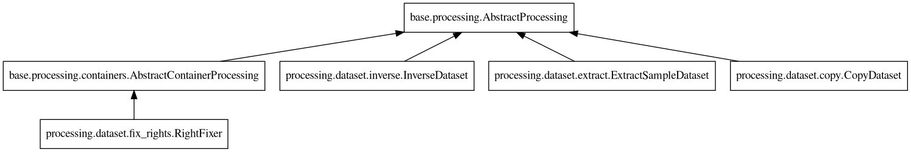
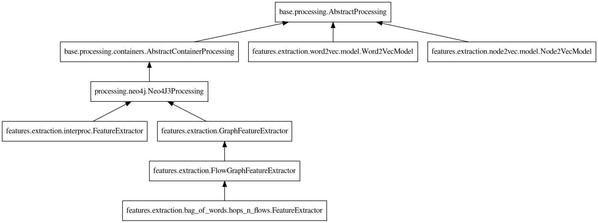
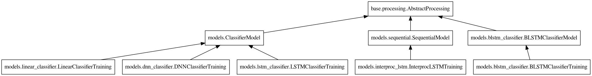

Designing pipelines
1. Design overview
All pipelines are designed with the same philosophy, illustrated by the following figure.
Assuming that the dataset is correctly organized in classes (the download scripts provided should take care of it), the steps to produce a viable classifier are the following:
- Process the dataset
Clean the dataset from any items that cannot or should not be parsed.
Create intermediate representations by parsing the code with external tools (Joern) or models (Word2Vec).
Enhance the intermediate representations by linking or annotating them.
- Extract the features
Select an extraction algorithm that will output the features in a CSV file. Assuming that
nfeatures are extracted and the dataset containsmsamples, reloading the CSV file using pandas should create a DataFrame of shape(m,n+2).Reduce the number of features by running one or several feature selectors on the dataset. This step will fasten the training of the model but might hinder further explainability steps.
- Train the model
Choose a model type (fully connected, reccurrent, etc.) fit for the extracted features and train it with the processed dataset.
- Evaluate the model
Run the model against unseen samples to see if the model can generalized what has been learned.
2. From prototype to release
To start designing a pipeline, it is advised to use Jupyter notebooks. Jupyter notebooks allow for fast prototyping by letting the user to inspect the variables created at each step and run these steps several time in a row. Some examples are available in the notebooks folder.
Once the notebook runs seemlessly, the code can be bundle into a Python script (see
the scripts
folder for more examples). With the help of argparse, the script can be made
versatile. In addition, wrapping the Python script in a bash script allows to
take care of dependency management that might not be straightforward for all users.
Few pipelines examples are documented here to help you get started.
3. Available processing
Here are the processing already integrated to the codebase and available when designing new pipelines. If a processing needs to be fixed or added, please create an issue. To create new processing classes, see Designing processing classes.
3.1. Dataset utilities
The dataset utility classes manipulate entire datasets for duplication or slicing:
3.2. Dataset processing
One of the first step to process the dataset is to perform cleaning task on the data. Generic utilities have been implemented for cleaning files:
bugfinder.processing.cleaning.remove_cpp_files.RemoveCppFilesbugfinder.processing.cleaning.remove_interproc_files.RemoveInterprocFiles
And other utilities are specifically designed to handle C/C++ code:
bugfinder.processing.cleaning.remove_main_function.RemoveMainFunctionbugfinder.processing.cleaning.replace_litterals.ReplaceLitteralsbugfinder.processing.cleaning.remove_comments.RemoveComments
The rest of the utilities are specific to the type of pipeline to apply and the model to train. See Example pipelines for more insights on the types of processing to use.
3.3. Feature extraction
Once the dataset is prepared, feature extraction can happen. Since different models need different features, the bugfinder has several feature extraction method available:
3.4. Feature reduction
Depending on the feature extractor chosen, it is possible to end up with many features,
impacting training time and convergence of the model. To remediate, several feature
reduction algorithms are packaged, all inheriting from
bugfinder.features.reduction.AbstractFeatureSelector.
3.5. Models
Once the feature extraction and reduction is done, the model can be trained. Several classifiers are available:
